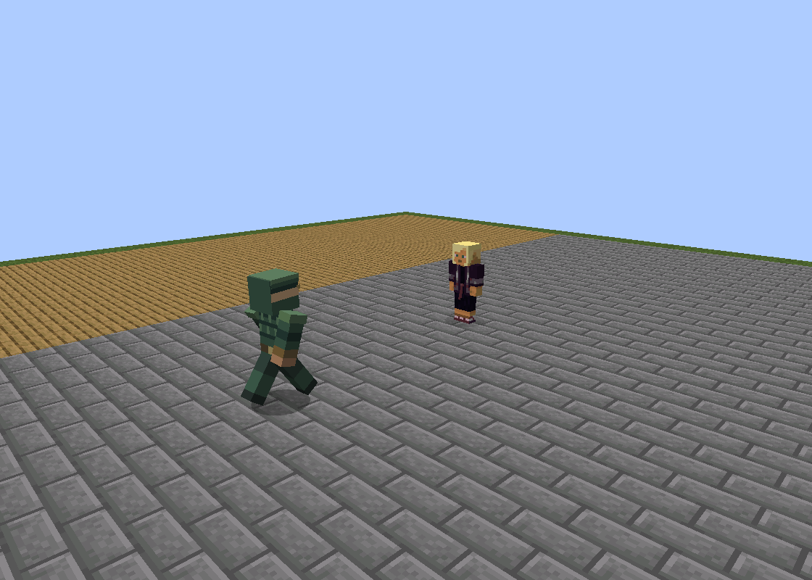
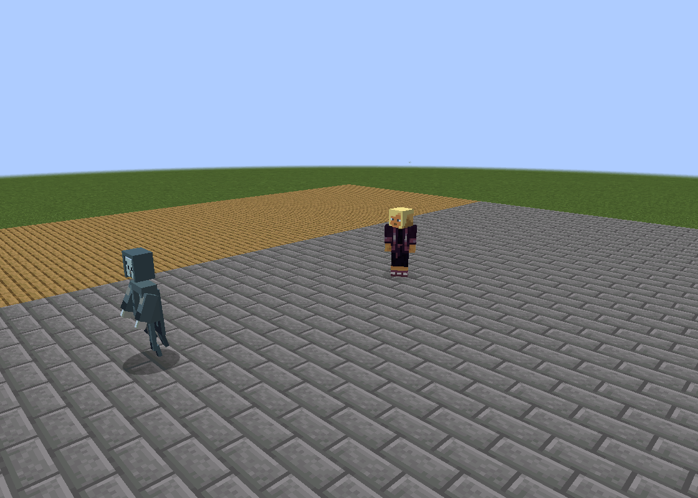
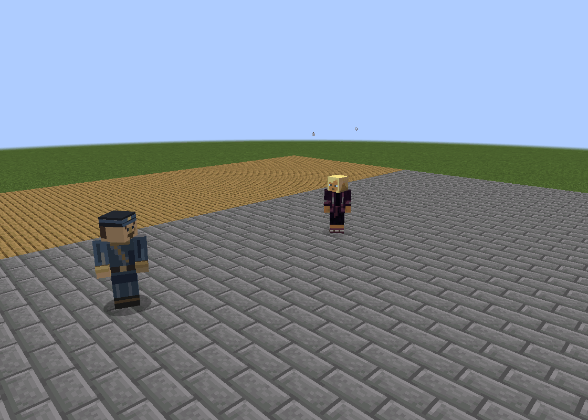
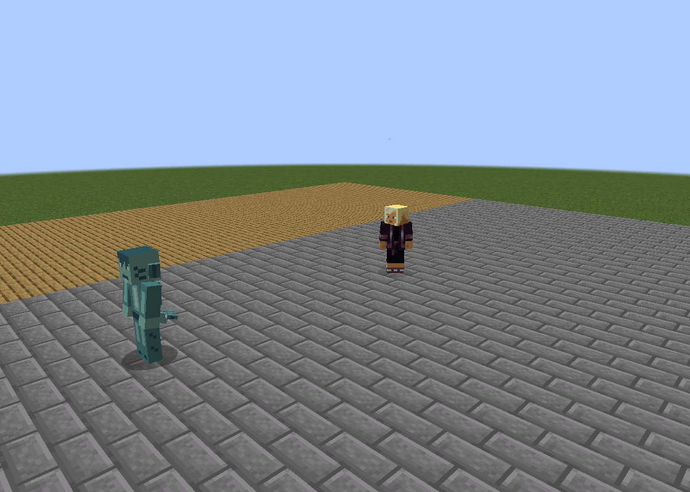
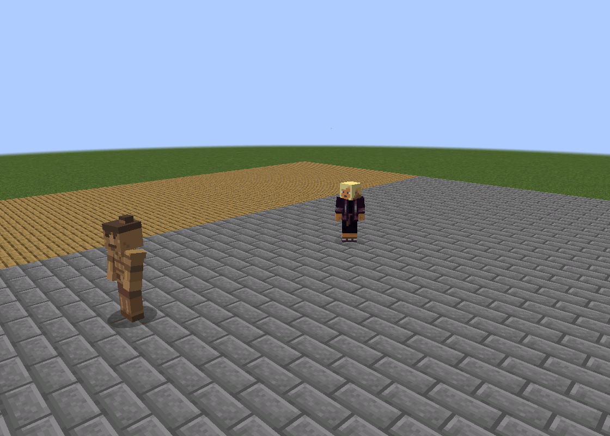
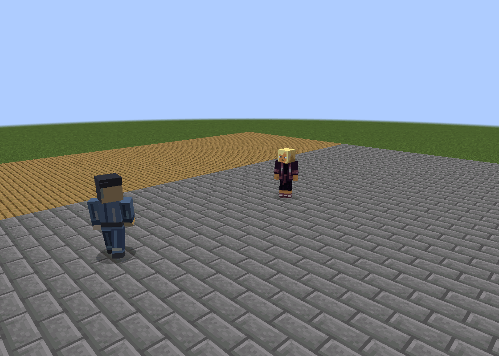

测试脚本只放置生物与生存玩家，不调用 setTarget、move、swing 或 hurt；目标选择、寻路与攻击均由现有AI完成。玩家接受抗性与每tick治疗，避免现有高伤害中断观察；未改生物数值或资源。
这是测试场中的生产AI，不是自然生成或野外遭遇。未验证死亡、水下遭遇、多人或20只同屏；大臣只检查正常活动且不攻击。
自行选中玩家 212 tick；寻路 22 tick；距出生点最大位移 6.29 格；直接伤害事件 8 次。

自行选中玩家 194 tick；寻路 20 tick；距出生点最大位移 6.45 格；直接伤害事件 9 次。

自行选中玩家 212 tick；寻路 18 tick；距出生点最大位移 6.47 格；直接伤害事件 10 次。

自行选中玩家 207 tick；寻路 19 tick；距出生点最大位移 6.46 格；直接伤害事件 10 次。

自行选中玩家 217 tick；寻路 43 tick；距出生点最大位移 6.21 格；直接伤害事件 8 次。

自行选中玩家 0 tick；寻路 168 tick；距出生点最大位移 8.94 格；直接伤害事件 0 次。
